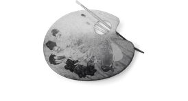
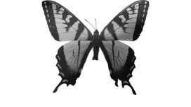
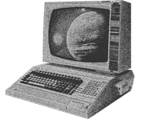
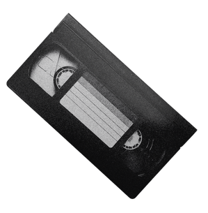
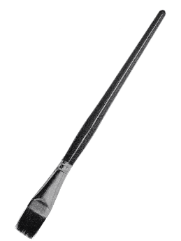
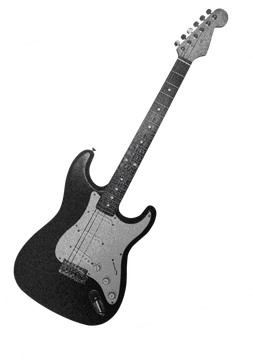
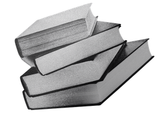
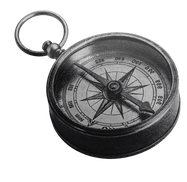
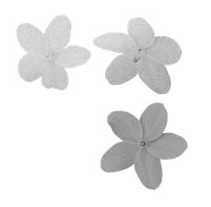

Su di Me

Ho 27 anni e sono una Graphic Designer e Illustratrice freelancer, laureata in Nuove Tecnologie dell'Arte. Negli ultimi tre anni mi sono specializzata nella creazione di identità visive, brand design e illustrazioni. Il mio approccio creativo è ibrido: amo muovermi tra i software digitali e la tela, sperimentando con la pittura tradizionale ad acquerello e acrilico.

Credo che l'arte e il design possano avere un impatto positivo sulla comunità. Per questo collaboro con "Innovazioni Sociali ODV", curandone la comunicazione visiva e contribuendo a un podcast dedicato a questioni sociali. Per la stessa associazione ho inoltre ideato diversi percorsi creativi, dai corsi di disegno per bambini agli eventi "Sip and Paint", pensati per avvicinare gli adulti all'arte in modo conviviale.

Durante i miei studi ho esplorato le potenzialità della rete, studiando la net art e le intersezioni tra estetica e programmazione. Questa ricerca mi ha spinta a esplorare il web come un vero e proprio mezzo espressivo. Oggi continuo ad indagare questo spazio, affascinata dal modo in cui la visione artistica e visiva può fondersi in modo organico con il digitale.

CINEMA
Sono una grande appassionata di film thriller e horror, che studio per le loro atmosfere e scelte visive. Attualmente i miei titoli preferiti sono The Substance e The Lighthouse.

ARTE TRADIZIONALE
Mi dedico costantemente al disegno e alla pittura, lavorando in particolare con acquerello e acrilico.

MUSICA E CONCERTI
Ascolto generi molto diversi tra loro, ma la mia identità musicale è radicata nel rock e nel metal. Amo l'energia della musica dal vivo e i miei artisti di riferimento sono My Chemical Romance, System of a Down, Nirvana e Lana Del Rey.

LETTURA E SCRITTURA
Amo leggere e mi dedico alla scrittura, due passioni che mi aiutano a trovare sempre nuove storie da raccontare e illustrare. H.P. Lovecraft è il mio autore di riferimento.

VIAGGIO
Esplorare nuovi luoghi è una delle mie principali fonti di ispirazione, un modo per arricchire costantemente il mio immaginario visivo e narrativo.

COMUNITà
Adoro condividere la mia passione insegnando le basi del disegno e organizzando eventi artistici.
I miei titoli di studio ed esperienze lavorative
| Anno | Ruolo e Azienda | Principali Attività |
|---|---|---|
| 2025 - 2026 | Graphic Designer, Content Creator & Event Management (Innovazioni Sociali ODV) | Creazione di eventi, corsi e gestione della comunicazione visiva, art direction e produzione di podcast. |
| 2023 - 2026 | Graphic Designer, Illustratrice & Content Creator(Freelance) | Comunicazione visiva per il settore Healthcare, Wellness, Agenzie B2B ed eventi privati. |
| Anno | Titolo di Studio / Certificazione | Istituto |
|---|---|---|
| 2026 - 2027 | Master "Full-Stack AI Developer" | Epicode |
| 2020 - 2024 | Laurea Triennale in Nuove Tecnologie dell'Arte | Accademia di Belle Arti di Napoli |
| 2013 - 2018 | Diploma in "Scienze Umane ad opzione Economico-Sociale" | Liceo Classico Statale “Plinio Seniore” |